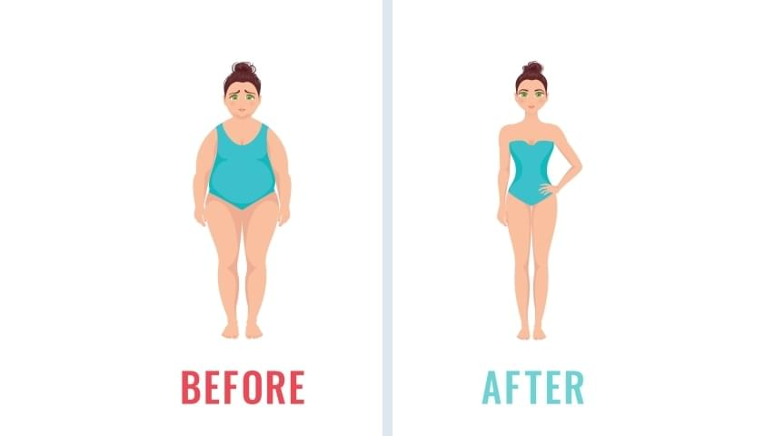
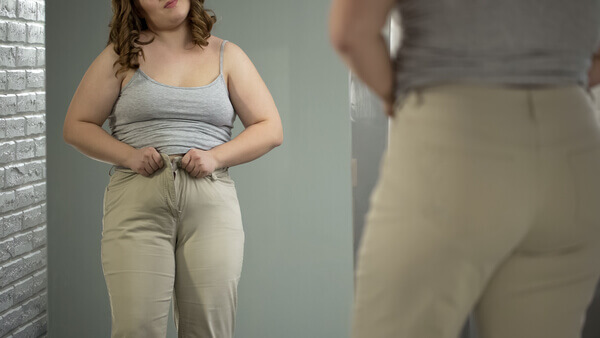
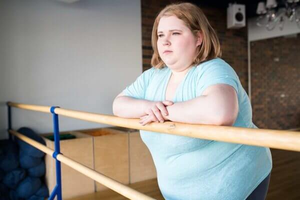
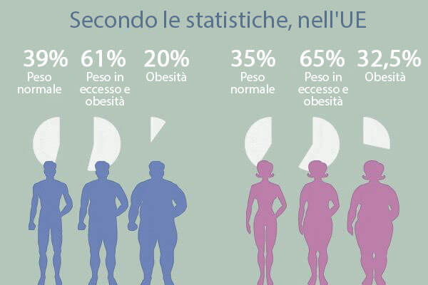
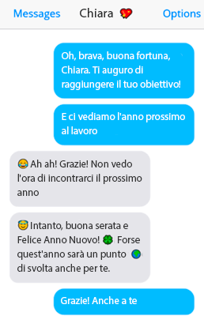
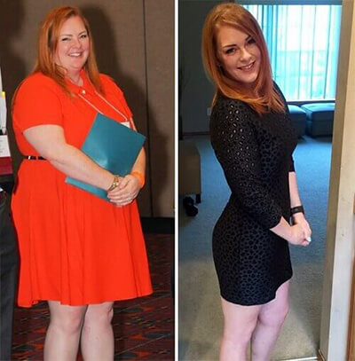
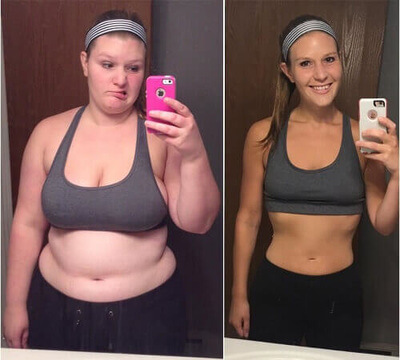

Scopri come questo "Metodo mattutino" può cambiare la tua vita
La maggior parte delle persone non l'ha mai provato...
Fai il test per vedere se un semplice "metodo mattutino" è giusto per te...
Per vedere se questo metodo ti aiuterà,
Fai un piccolo test qui sotto:

Fai il test per scoprire come Bianca (35 anni) ha perso 34,5 kg in
sole
7 settimane senza esercizio fisico e restrizioni alimentari.
Prendendo questo semplice rimedio durante la colazione, sarai in
grado di sbarazzarti di quella quantità di grasso che non hai
nemmeno sognato.
In effetti, alcune persone possono persino perdere 15 kg in
soli 30 giorni, semplicemente prendendo questo rimedio ogni
giorno prima
delle 10 del mattino.
Il metabolismo mattutino è sicuro?
La specialista in scienza del dimagrimento Claudia Marconi ha aiutato me, Bianca Leonetti, a perfezionare il mio metodo per migliorare il benessere, che la maggior parte delle persone in tutto il mondo può utilizzare per normalizzare il loro peso in modo naturale.
Il "metodo mattutino" è stato progettato per eliminare la causa principale del peso squilibrato e ha già aiutato migliaia di persone in tutto il mondo a migliorare il loro benessere. Fai il test sopra, per vedere se questo metodo può aiutart
OPPURE...
Come l'ex vittima della scuola ha aiutato centinaia di uomini e donne a perdere quei chili
in più?
Quello che ci siamo incontrati in questa pagina non è certamente un caso.
Non so da dove vieni o in quali condizioni sei cresciuto. Non so il tuo nome, ma c'è almeno
una cosa che so. Sei qui perché non vuoi più sentirti a disagio davanti allo specchio.
Una sensazione familiare?
Se il tuo fisico attuale oscura il tuo presente e tu desideri un futuro luminoso, non puoi
permetterti di perdere ciò che sto per condividere con te oggi.
Ma prima di procedere, ho una domanda per te…
Ti vergogni di andare in piscina nella tua città per paura di incontrare vecchi amici?
Se ci pensi, è passato molto tempo dall'ultima volta che hai fatto il bagno in pubblico. È
vero?
Sulla spiaggia trascorri più tempo sotto l'ombrellone?
Se è così, ti sentirai sicuramente meglio, se avrai qualche chilo in meno? Non è vero?
E, inoltre, sicuramente vuoi vivere in un corpo più snello, ma probabilmente è passata
un'eternità e non hai ancora avuto successo, nonostante i tuoi migliori sforzi?
Se continui a leggere queste righe, sicuramente vuoi saperne di più e hai ragione, perché
sì, proprio per te ho una soluzione per farti finalmente dire addio ai tuoi chili di troppo.
Prima di andare a questa pagina, probabilmente hai già provato tutti i consigli per perdere
peso.
Invano…
Anch’io, come te, ho seguito varie raccomandazioni per perdere quei chili in più.
Senza risultati…
In ogni caso, ti faccio sapere che il fatto che oggi la perdita di peso è associata alla
sofferenza, non è colpa tua...
Le persone che offrono numerosi metodi di perdita di peso non sanno quanto sia difficile, i
loro metodi sono efficaci solo per un piccolo numero di persone. Mentre la maggior parte
solo perde tempo, forze e danneggia il corpo. Per questo motivo, con ogni tentativo di
buttare giù il peso eccessivo, hai sempre meno speranza di ottenere risultati.
Resta con me, perché ti dirò come sono riuscita a rompere questo terribile circolo vizioso
che ha rovinato la mia vita quotidiana, e come anche tu puoi uscire da questa terribile
situazione.
Avevo dimenticato di presentarmi. Il mio nome è Bianca Leonetti e una volta ero anch'io
nella situazione simile alla tua.
Allora, cinque anni fa ero obesa. Ero grassa. Sì, sì, ero proprio così.
In effetti...(beh, hai visto la prima foto, ero anche peggio).
Nei momenti peggiori pesavo più di 130 kg.
Ci è voluto molto tempo per farmi coraggio di pubblicare questa foto, ma voglio comunque
mostrare come è iniziato il mio percorso.

Questa foto mi ricorda un passato in cui non voglio più tornare
Immagina che tipo di umiliazione è per una donna?
E ancora meglio, immagina che tipo di umiliazione è quando questa donna non può allacciarsi
le scarpe?
Avevo paura di andare in palestra per quello.
Ecco come ero da bambina
La storia del mio peso in eccesso risale all'infanzia.
Era dovuto alle particolarità genetiche che ero sempre più grande dei miei compagni di
classe, ma una volta mi è stato detto chiaramente che in realtà avevo dei chili in più.
Inoltre, è iniziato a succedere ogni giorno: puntavano le dita contro di me, come se fossi
un colpevole in tribunale, e mi chiamavano "maiala". Proprio così, era il soprannome che io
avevo a scuola.
Ogni giorno sentivo queste parole per tutta la scuola.
Ovviamente, la mia fiducia non ha resistito a quel vortice di odio quotidiano. E presto ho
trovato rifugio nella mensa.
È lì che, senza rendermene conto, per la prima volta sono entrata in questo orribile circolo
vizioso.
Allora non pensavo nemmeno che avrei dovuto aspettare altri dieci anni per uscirne.
Non c'è da stupirsi che trovare un’amica si è rivelato difficile... per non dire
impossibile, e ho dovuto abituarmi a mangiare da sola alla mensa. Dalla seconda media sono
diventate abituali anche le briciole nei miei capelli che i compagni di classe mi buttavano
addosso.
Anche durante le pause ero da sola. Mi nascondevo vicino alle scale dalle sbirciate degli
insegnanti e dagli insulti degli alunni.
Il tempo passava, e il peso sulla bilancia continuava a crescere.

Di rado andavo in palestra
Ero talmente grassa che la gente non si sedeva più accanto a me, ma preferiva stare in
piedi...
Più tardi ho capito che le persone grasse puzzano e per questo poche persone parlano con
loro.
Fortunatamente, quando il mondo ci volta le spalle, puoi sempre contare sulla famiglia...
Ma non era il mio caso... Sono diventata "grassa" anche in famiglia. Mia madre mi diceva di
stare a dieta per perdere almeno un po' di peso, mi rimproverava per dover comprarmi nuovi
vestiti, perché non potevo più entrare in quei vecchi. E quante volte mi ha chiamato grassa,
maiale, mucca, diceva che tra poco avrebbe dovuto espandere la porta…
È difficile immaginare condizioni peggiori per un adolescente che cerca di trovare il suo
posto nella società... da solo e senza un punto di riferimento. Ero ferita e sola, e
mangiavo ancora di più per non sentire l'amarezza...
Poi è arrivata solo la depressione.
Ora passo ai fatti. E ce ne sono abbastanza.
Dati statistici riepilogativi dell'Ufficio Regionale Europeo
dell'OMS*:
Nel periodo tra il 1980 e il 2020, il numero di persone in tutto il mondo che soffrono
di obesità è quasi raddoppiato. Secondo i dati nazionali, nel 2020, oltre il 65% degli
uomini e delle donne nella regione europea dell'OMS aveva un peso corporeo in eccesso e
circa il 33% delle donne e il 20% degli uomini erano obesi.
Secondo i dati più recenti, nei paesi dell'Unione Europea, il 45-70% della popolazione
adulta è in sovrappeso e il 10-30% è obesa.

Alla fine della scuola, ho preso al minimo 30 kg.
Comunque, quello non mi ha impedito di laurearmi e non mi ha impedito di continuare i miei
studi.
Dopo la laurea, sono stata assunta in un'azienda prestigiosa.
Se prima sentivo sempre delle parole offensive nei miei confronti, sia sull'autobus, nei
corridoi, in classe o nella mensa, al lavoro notavo solo delle occhiatacce. Ma la maggior
parte delle persone era indifferente.
E proprio in ufficio ho incontrato una persona che inconsciamente ha capovolto la mia vita.
Si chiamava Chiara e aveva un dono incredibile: la capacità di compatire immediatamente le
persone.
Questo mi ha permesso di trovare la mia anima gemella per la prima volta dopo tanto tempo.
All'inizio era molto insolito passare del tempo con lei, perché non avevo mai avuto amiche
in precedenza.
Alla festa di Capodanno, lei mi ha parlato del suo desiderio di perdere peso.
Rispetto a me, non aveva in realtà il problema dei chili in più, ma ha preso una decisione
del genere.
Tuttavia, le ho augurato buona fortuna:

Clic... poi sono caduta all'inferno
È stato dopo le sue parole che mi è venuta la voglia di perdere peso che non mi lasciava in
pace. Ero pronta a fare qualsiasi cosa per perdere i miei chili di troppo.
Così, dopo il Capodanno, ho deciso di mettermi ad una dieta seria ma... si è dimostrato
inutile.
Dopo quel fallimento, ho iniziato a seguire il primo programma di allenamento... poi il
secondo... poi il terzo.
Programmi di allenamenti compilati da famosi "esperti web". Ne ho fatti un sacco... Tutto
invano.
In realtà, sto esagerando un po', in 3 mesi sono riuscita a perdere 8 kg... ma sono
ritornati entro 6 mesi successivi.
Se all'inizio dell'anno ero come una pazza, alla fine del nono mese ero sull'orlo
dell'abisso.
Completamente depressa psicologicamente.
Così tanti sforzi, così tanti limiti e tutto per risultati inesistenti.
Tutte le mie speranze sono improvvisamente crollate. Mi dispiaceva ammetterlo.
Una volta stando di fronte ad uno specchio, disgustata dal mio riflesso, ricordo di aver
pensato:
"Che diavolo sto ancora facendo sulla Terra?"
Eppure facevo le cose giuste...
Quando era necessario limitarmi, mi limitavo.
Quando avevo bisogno di andare fino alla fine del programma, ci andavo.
Ma comunque, non ho nessun risultato, nonostante io abbia fatto le cose giuste.
C'erano delle domande nella mia testa...
Cosa ho fatto di sbagliato? Perché io? Qual è il problema?
È stato allora che ho capito che se in realtà NON è colpa mia, e se anche tu ti trovi
nella stessa situazione, devi capire che NON è colpa tua.
Sono tutti coloro che nutrono i loro figli con i nostri fallimenti, con le nostre
sofferenze, con le nostre disperazioni.
L'industria della perdita di peso mette in gioco il nostro disagio, vendendoci i loro
programmi di allenamento, le diete e così via.
Per anni sono stata costretta a credere di dover seguire questo nuovo meraviglioso programma
di allenamento...
E gli ho creduto.
Sono loro che ci impediscono di perdere peso, e gli esperti stanno semplicemente
approfittando del nostro disastro...
Dal punto di vista finanziario, è nel loro interesse.
Non appena ho iniziato a capire cosa ci fa perdere peso veramente, ho iniziato a lavorare
sul mio metodo.
Ed è qui che ho davvero iniziato a perdere peso.
Velocemente... MOLTO velocemente.
Mi sono sciolta come la neve sotto il sole.
Mi riconosci? Questa è la nuova me!
All'inizio non mi rendevo conto di aver perso quasi 35 kg, ma gradualmente quello mi ha
anche aiutato a ritrovare la mia fiducia.
Un po' di pazienza e ti darò la formula!!!!
Non hai idea di cosa si prova, quando ti rendi conto che stai davvero attirando l'attenzione
di uomini belli! Può cambiare la tua vita per sempre!
Supera la dipendenza dal cibo e dalle bevande gassate e trova il tuo metodo per perdere
peso... questo cambierà la tua vita.
La mia pelle è diventata luminosa e io sono diventata energica per vivere.
Ma voglio avvertirti, il programma che ho fatto per me stessa mi ha comunque portato un vero
problema...
Ho dovuto cambiare TUTTO il mio guardaroba, ma non mi dispiace per quei soldi.
Rivelazione... poi la domanda
Dopo il mio successo, ho avuto una domanda.
Aiuta solo me o qualcun altro?
Volevo vedere se il mio metodo funziona davvero e che non è soltanto la fortuna.
Avevo bisogno di cavie.
Così ho iniziato a condividere il mio metodo con gli altri che hanno visto i miei
cambiamenti, ma non capivano come fosse possibile...
Ho fatto un patto con il diavolo per loro. Ovvero, con le grandi aziende.
Poi, loro hanno iniziato ad usare il mio metodo e hanno confermato che funzionava.
Per me è stato un successo incredibile. Sono riuscita a raggiungere i miei obiettivi e a
cambiare radicalmente la mia vita.
Ogni giorno mi alzavo sulla bilancia e pregavo per vedere la cifra più piccola di ieri. Ma i numeri diminuivano molto lentamente. E, più piccolo era il peso, più era difficile buttarlo giù. Ma è importante non mollare, non andare a mangiare pizza e bere spuma. Sapete cosa può aiutarvi ad accelerare il risultato? ! Testato su me stessa!
Ricordare gli allenamenti in palestra mi fa venire i brividi. Dopo cinque minuti di allenamento di gruppo, avevo tutta la maglietta sudata. E quando facevo gli addominali, grugnivo, e tutti mi guardavano bieco. Mi divertivo? No! Lo sport mi ha aiutato a perdere peso? Per poco. Vi ha aiutato? Condividete nei commenti!
Quando pesavo più di 130 kg, i piatti sani per me non erano un cibo. Le insalate, le ho iniziato a mangiare solo quando mi sono messa a dieta. Poi mi girava la testa, volevo dormire e non avevo le forze per fare qualcosa. Ho persino sognato il cibo. È stato un periodo terribile. Secondo me, non si dovrebbe esagerare. Non mangiare cibo grasso, non morire di fame per giorni, ma mangiare un po' e quello che vuoi. Che ne dite?
Quando ero grassa, odiavo gli specchi. Ogni volta che guardavo il mio riflesso, odiavo me stessa e mi veniva da piangere. Naturalmente, quando ho perso peso, è diventato un po' più facile amare me stessa. Ma prima di tutto è importante capire che i problemi con l'autostima sono nella tua testa e la causa non è il peso.
Quando ero grassa, odiavo gli specchi. Ogni volta che guardavo il mio riflesso, odiavo me stessa e mi veniva da piangere. Naturalmente, quando ho perso peso, è diventato un po' più facile amare me stessa. Ma prima di tutto è importante capire che i problemi con l'autostima sono nella tua testa e la causa non è il peso.
Questo è il motivo per cui ho deciso di creare questo sito e ho iniziato a condividere con
uomini e donne come te una decisione che ha cambiato la mia vita e la quale può cambiare la
vita di quelle persone e anche la tua.
L'ho chiamato "Metodo di perdita di peso spontaneo". Ho studiato la composizione di vari
prodotti per la perdita di peso, ho studiato il metodo di azione dei componenti, li ho
compilati e completamente rielaborati.
Ci sono voluti anni di sviluppo, ma ce l'ho fatta.
Ho fatto questa soluzione completa per perdere peso.
Perdere peso non è mai stato così facile, questo problema che mi ha accompagnato per più di
15 anni della mia vita è finito in meno di 1 anno.
Oggi sono una persona nuova e posso concentrarmi su ciò che è veramente importante per me.
Il mio peso, che mi ha reso incapace di fare molte attività, è ora in passato.
Recentemente sono stata invitata ad un consiglio.
Dopo che era apparsa la pubblicazione sul mio metodo di perdita di peso, molte persone hanno
iniziato a contattarmi per comprare la mia idea.
Quello che sto per dire potrebbe sembrare troppo brusco. Ma non ho inventato questo rimedio
per venderlo agli stranieri. Cosa succederebbe, se vendessi davvero questa idea agli
stranieri? La brevetterebbero e la maggior parte delle persone non potrebbe usare il mio
rimedio. E probabilmente farebbero salire alle stelle il prezzo. Sono giovane, ma non
stupida. Uno specialista mi ha detto che un rimedio del genere dovrebbe costare almeno 1500
euro. Come una persona normale potrebbe permettersi un rimedio che costa 1500 euro?!
Perciò, quando sono stata invitata a partecipare al miglioramento del mio integratore
alimentare, ho subito accettato. Abbiamo lavorato insieme con migliori specialisti. È stato
davvero fantastico. Ora il prodotto ha già superato le fasi di preparazione necessarie.
L'abbiamo chiamato
.
E, soprattutto, il suo prezzo è accessibile a tutti. Do anche consigli alle persone che
utilizzano questo prodotto e cercherò di rispondere a tutte le domande nei commenti.
Specialista in scienza del dimagrimento Claudia Marconi è stata tra
gli specialisti coinvolti nella fase di perfezionamento di .
Lei ha parlato di più sulla novità:
L'idea di Bianca è come un navigatore per auto – mostra il modo più veloce per perdere
peso.
E questo metodo funziona per tutta la vita.
è stato creato sulla base delle idee di Bianca. Lei ha suggerito di
usare
proprietà uniche di MCT (trigliceridi a catena media) - che vengono metabolizzati nel
fegato
ai chetoni, aumentando il loro numero nel corpo. Cioè, essi sono in grado di produrre
più
chetoni rispetto al grasso normale e sopprimere la fame.
deve essere assunto entro 30 giorni senza
interruzioni. Si
consiglia di prendere 1 capsula 3 volte al giorno. Seguendo le istruzioni, è possibile
ridurre la quantità di grasso di 10 volte! Questo rimedio aiuta ad accelerare la
conversione
di minerali e sostanze. Stimola il sistema endocrino, aiuta a ridurre l'appetito. È
davvero
un prodotto naturale che stimola il sistema naturale del corpo. La combustione dei
grassi
avviene migliorando il metabolismo dei grassi.
Questi prodotti non saranno mai venduti in farmacia!
Il costo di produzione di ogni confezione è di pochi euro. Sono in corso i negoziati con
un’autorità superiore. In questo modo è possibile risparmiare oltre il 90% dei costi per
rendere questo prodotto accessibile alla popolazione locale.
Nota del redattore:
Attenzione! A causa del gran numero di ordini e della piccola
quantità dei pezzi prodotti, il distributore ha deciso di limitare il periodo di promozione!
Ora lo sconto è disponibile solo fino al 02.08.2021.
Entro la fine della promozione, può essere ordinato compilando il modulo
sul
nostro sito web principale. Non dimenticare che è valida una promozione con uno sconto del
50%!
Commenti:
Irene Battaglia28.07.2021
È fantastico! Grazie a , ho perso 9 kg
e allo stesso tempo
ho potuto mangiare quello che volevo. Vorrei perdere ancora qualche
chilo e sarà perfetto.

Tommaso29.07.2021
Una volta avevo già visto un articolo su questo rimedio. Le recensioni
erano molto buone, probabilmente non è per caso.
Martina29.07.2021
E come posso ordinare ?
Alice Silvani30.07.2021
Sopra c'è il modulo d'ordine. Compila e ti richiameranno
Angela30.07.2021
Anch'io ho sentito parlare del rimedio da qualche parte. Probabilmente è
un segno e bisogna ordinare. Mentre è valida la promozione.
Susanna31.07.2021
Ho pagato il pacco al momento della ricezione, ciò è molto conveniente
Letizia31.07.2021
Pensavo che non avrei mai potuto perdere peso, ma ci sono riuscita!
Ho
perso 10 kg e continuo allo stesso ritmo. Gli amici sono stati
molto
sorpresi dai miei risultati, hanno pensato che stessi morendo di
fame.
Non gli ho detto nulla, lascio che pensino che io abbia lavorato
tanto:)

Vera De Angelis01.08.2021
Molto felice di essere riuscita ad acquistarlo con uno sconto! Non
vedo
l'ora di ricevere il mio pacco!
Elisabetta Morelli01.08.2021
Ho avuto un incidente, dopo il quale non ho potuto camminare per
molto
tempo. Durante quel periodo, ho preso 29 kg e mi sono
trasformata in un
donnone. A causa dell'eccesso di peso, il mio recupero era ancora
più
complicato. Su consiglio di un amico, ho provato .
Ho sentito cambiamenti sin dal primo giorno di assunzione: il mio
corpo
ha iniziato a lavorare più velocemente per digerire il cibo. Dopo la
prima settimana ho buttato giù 5 kg, senza cambiare il mio
stile di
vita! Spero che gli altri 24 kg spariscano così velocemente!
Rita Ferrarelli02.08.2021
Ho letto i commenti e mi sono resa conto che ho bisogno di ordinare
il
rimedio per me stessa, mentre lo sconto è ancora valido.
Paola Conti02.08.2021
Tutti si chiedono come io sia riuscita a perdere peso, perché prima
non
riuscivo a lungo a perdere i miei 5 kg in eccesso. Ed è tutto
grazie a
!
*Il testo pubblicitario è un’invenzione. Qualsiasi coincidenza con persone, luoghi o eventi
è puramente casuale.
**Il prodotto pubblicizzato è un integratore alimentare. Gli integratori alimentari sono dei
prodotti che vengono integrati alla dieta. Non sono medicinali e non sono destinati alla
diagnosi, mitigazione, prevenzione o trattamento delle malattie.
per aver fatto il test. Di seguito voglio raccontarti la mia storia su come sono riuscita a
perdere 24,5 kg. E la quale mi ha spinto ad aiutare altre persone.
Commenti:
È fantastico! Grazie a , ho perso 9 kg e allo stesso tempo ho potuto mangiare quello che volevo. Vorrei perdere ancora qualche chilo e sarà perfetto.
Una volta avevo già visto un articolo su questo rimedio. Le recensioni erano molto buone, probabilmente non è per caso.
E come posso ordinare ?
Sopra c'è il modulo d'ordine. Compila e ti richiameranno
Anch'io ho sentito parlare del rimedio da qualche parte. Probabilmente è un segno e bisogna ordinare. Mentre è valida la promozione.
Ho pagato il pacco al momento della ricezione, ciò è molto conveniente
Pensavo che non avrei mai potuto perdere peso, ma ci sono riuscita! Ho perso 10 kg e continuo allo stesso ritmo. Gli amici sono stati molto sorpresi dai miei risultati, hanno pensato che stessi morendo di fame. Non gli ho detto nulla, lascio che pensino che io abbia lavorato tanto:)
Molto felice di essere riuscita ad acquistarlo con uno sconto! Non vedo l'ora di ricevere il mio pacco!
Ho avuto un incidente, dopo il quale non ho potuto camminare per molto tempo. Durante quel periodo, ho preso 29 kg e mi sono trasformata in un donnone. A causa dell'eccesso di peso, il mio recupero era ancora più complicato. Su consiglio di un amico, ho provato . Ho sentito cambiamenti sin dal primo giorno di assunzione: il mio corpo ha iniziato a lavorare più velocemente per digerire il cibo. Dopo la prima settimana ho buttato giù 5 kg, senza cambiare il mio stile di vita! Spero che gli altri 24 kg spariscano così velocemente!
Ho letto i commenti e mi sono resa conto che ho bisogno di ordinare il rimedio per me stessa, mentre lo sconto è ancora valido.
Tutti si chiedono come io sia riuscita a perdere peso, perché prima non riuscivo a lungo a perdere i miei 5 kg in eccesso. Ed è tutto grazie a !